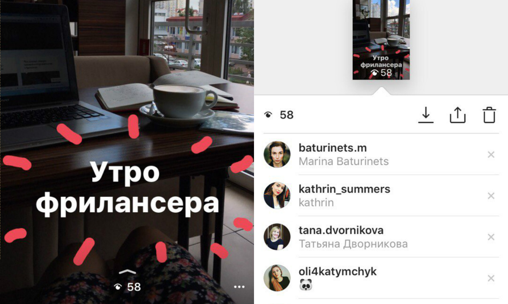
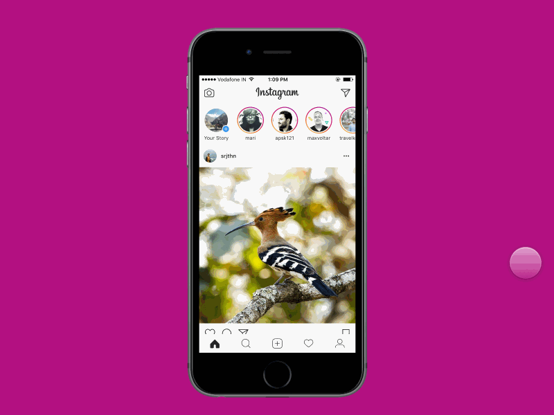

Для чего это нужно?
₪ Та для того,что бы поднять себе настроение.Такая мода очень распространенная сейчас.Тем более ты можешь узнать что делают твою друзья,даже не задавая тупых вопросов по типу "что делаешь?:)